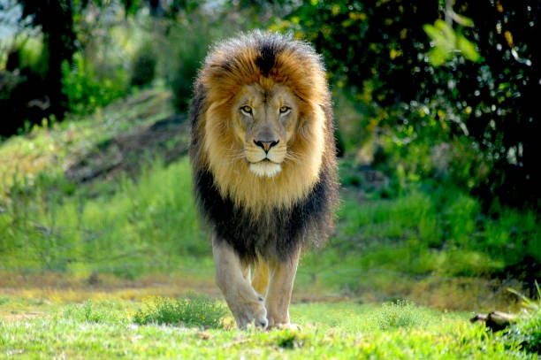

Aquí tienes la información clave sobre el león, estructurada de forma clara para que puedas usarla en los párrafos o apartados de tu página web: Información General: El Rey de la Sabana El león (Panthera leo) es el segundo félido más grande del mundo, después del tigre. A diferencia de otros felinos, los leones son animales extremadamente sociales y viven en grupos llamados manadas. Características Principales: Melena: Es exclusiva de los machos. Cuanto más oscura y densa es, más sano y fuerte se considera al león. Sirve para proteger el cuello durante las peleas. Rugido: Puede alcanzar los 114 decibelios y escucharse hasta a 8 kilómetros de distancia. Lo usan para marcar territorio. Peso: Un macho adulto puede pesar entre 150 y 250 kg, mientras que las hembras son más pequeñas y ágiles. Etimología y Origen Siguiendo la línea de tus otros apartados técnicos, aquí tienes el desglose lingüístico: Raíz: La palabra proviene del latín leo y del griego antiguo λέων (léōn). Clasificación: Pertenece al género Panthera, que agrupa a los grandes felinos capaces de rugir gracias a una adaptación en su hueso hioides. Estructura Social y Caza Es interesante notar la división de roles dentro de la manada: Las Leonas: Son las principales cazadoras. Trabajan en equipo para rodear a presas como cebras, ñus y búfalos. Son más rápidas que los machos. Los Machos: Su función principal es proteger el territorio y a las crías de amenazas externas (como otros leones o hienas).